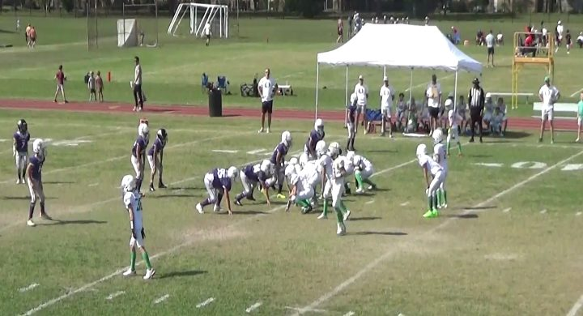

prepared by Mr. Wang from Horned Frogs vs Ducks, October 24, 2026
Watch the QB wide runs to strong side. Follow the WR motion
The Ducks run the quarterback wide to the strong side, again and again, and almost never inside.
20 of their 22 plays were runs, and a quarterback kept it on 16. 16 runs went wide and only
1 went up the middle. Their main look is three receivers with the slot motioning across to the tight end:
14 snaps had that motion, and 12 of them went to the side he ran to. They rotate two
quarterbacks, #2 and #0, and both run it.
Where their runs go
They rarely run inside. 16 of 20 runs went wide, 14 of them to the strong side.
3 went off tackle. Just 1 was a dive up the middle, and it gained nothing.
Where
Runs
Which way
Yards
Wide: sweeps and reverses
16
14 strong · 2 weak
7.6 avg · long 53; 45-yd TD called back
Off tackle
3
2 strong · 1 weak
30.7 avg · long 90
Inside: dive up the middle
1
–
0 yds
The two weak-side wide runs are the WR reverse after a fake sweep strong.
Their formations
Their two main looks, 16 of their 22 plays. The boards are drawn from the personnel;
the film frame beside each one shows how they really lined up. The other 6 snaps came
from sets they used twice each: Shotgun Bunch (2), Shotgun Spread (2), Shotgun 4WR, 1RB (2). The two from four receivers were the same slot-motion QB sweep,
including a 53-yard touchdown.
A. Shotgun 3 WR QB Sweep Strong
12 of their 22 plays: 12 runs.
Schematic, strong side drawn right. The slot came across on all 12 snaps from this set; the quarterback then swept to the TE side (8) or faked it and gave the reverse back to the weak side (2).

On film: play 59, just before the snap. Ducks in white with green.
Passes: 2, both off a sweep fake from two tight ends and twins (one incomplete to the TE, one
15-yard touchdown to a WR). The 45-yard reverse touchdown on play 46 came back for holding and is not in the yards.
Our defensive jobs
Everybody: follow the WR motion. When the slot runs across to the tight end, the sweep is coming that way.
Linebackers: flow to the outside. Only 1 of their 20 runs went up the middle. Get to the edge with the quarterback.
Strong-side end and outside linebacker: set the edge. Turn the quarterback back inside. Both of their long runs (90 and 53 yards) went to the strong side.
Backside end: stay home. After the fake, #13 brings the reverse back to the weak side.
Two tight ends and twins: think pass. Half their snaps from it were a sweep fake and a throw. Defensive backs, stay with your man.
Both quarterbacks run. #2 has the most carries; #0 broke the 90-yarder.
Practice the calls: “Motion, sweep strong!” “Reverse!” “Twins, pass!”
Teach it with these clips
The Ducks wear white with green trim on this film. The Horned Frogs wear purple.
Slot motion, QB sweep
Watch the slot run across to the tight end. The quarterback takes it wide to that side. This is their play.
22 Ducks scrimmage snaps from the chart. Extra points, not counted above: 21 (Slot WR Motion, QB Off Tackle: 2 yards, XP no good), 32 (Fake HB Dive, QB Sweep: 3 yards, XP good), 65 (Pass to RB in flat: no gain).
False starts (17, 44, 55) are left out.